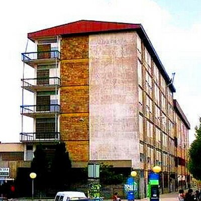
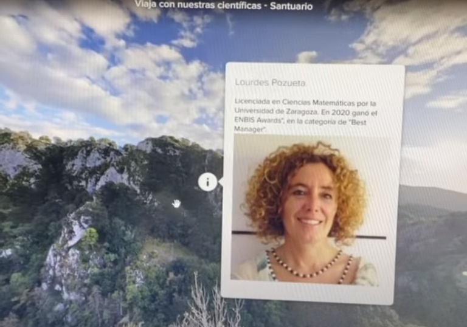

|

|
Como pudisteis ver en nuestras redes sociales, también hemos estado trabajando en la plataforma Roundme la cual es una aplicación en la que podremos crear viajes seminversivos si no disponemos de unas gafas VR a partir de imágenes 360. En nuestro caso hemos creado varios viajes a distintos sitios característicos de cada científica, donde podremos encontrar puntos explicativos de la mujer y otro punto más para poder viajar al siguiente sitio.
|

|
|---|
LOLA PRIEGO
JENNIFER SESMERO
RAQUEL SERRANO
COVADONGA BETEGÓN
MARIAM TÓRTOLA
MARIOLA LOBATO
NURIA VILANOVA
LOURDES POZUETA